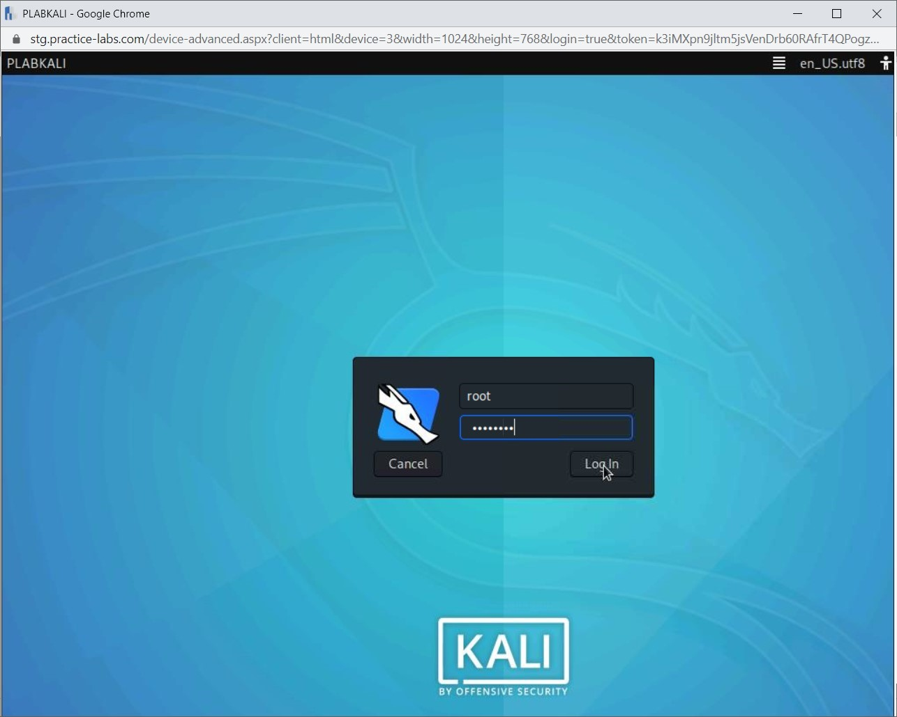
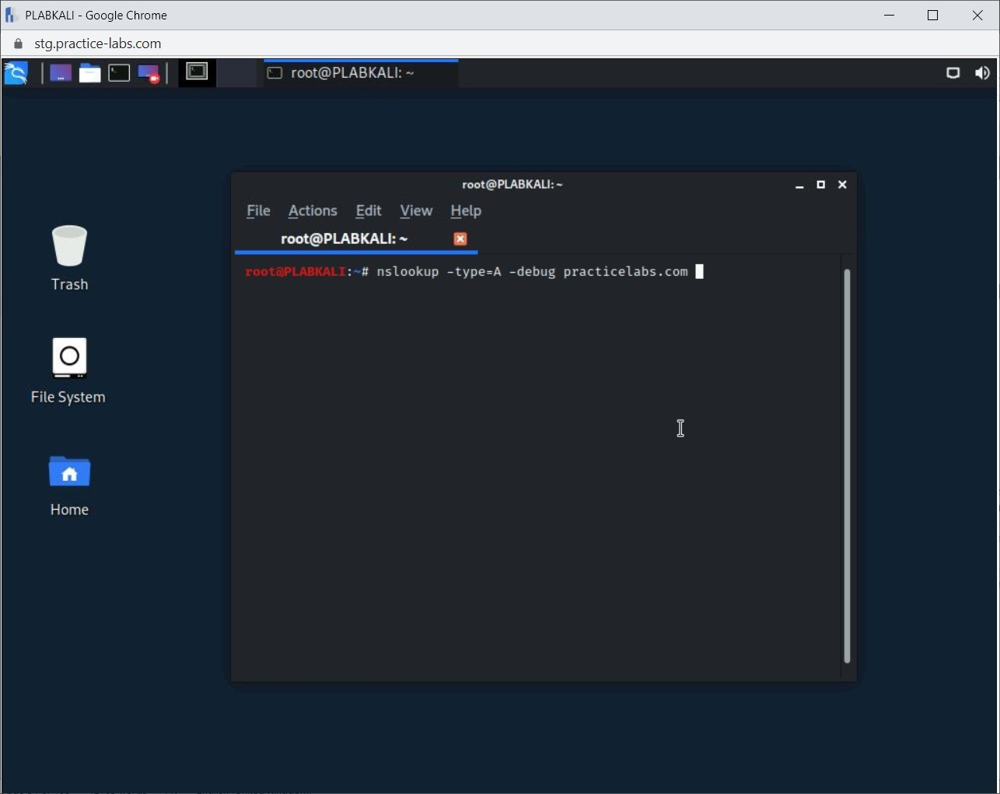
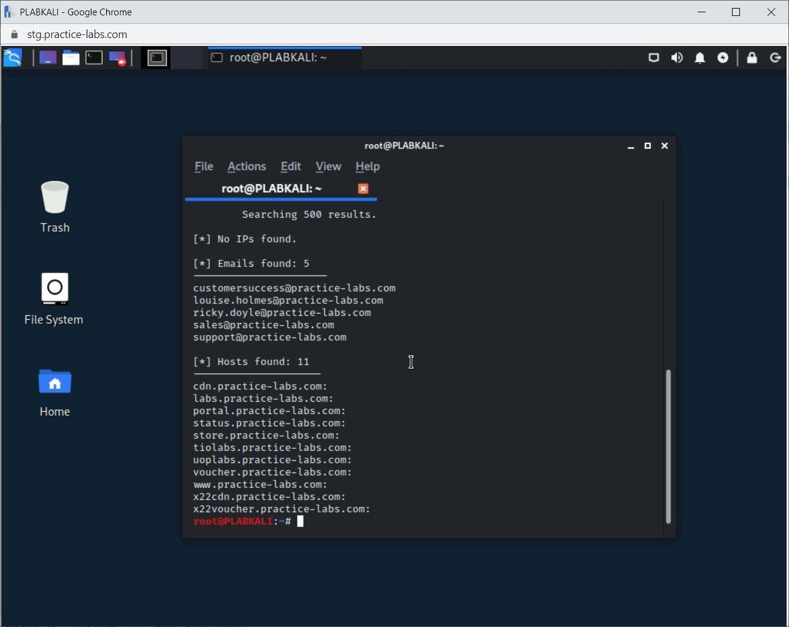
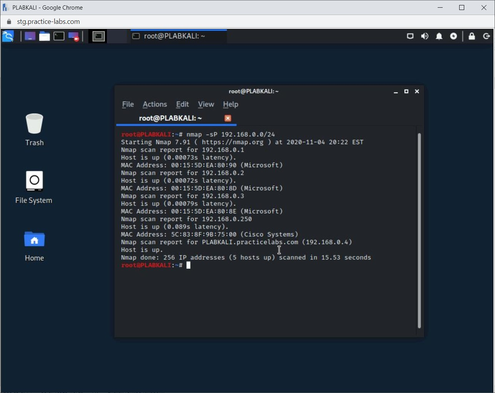
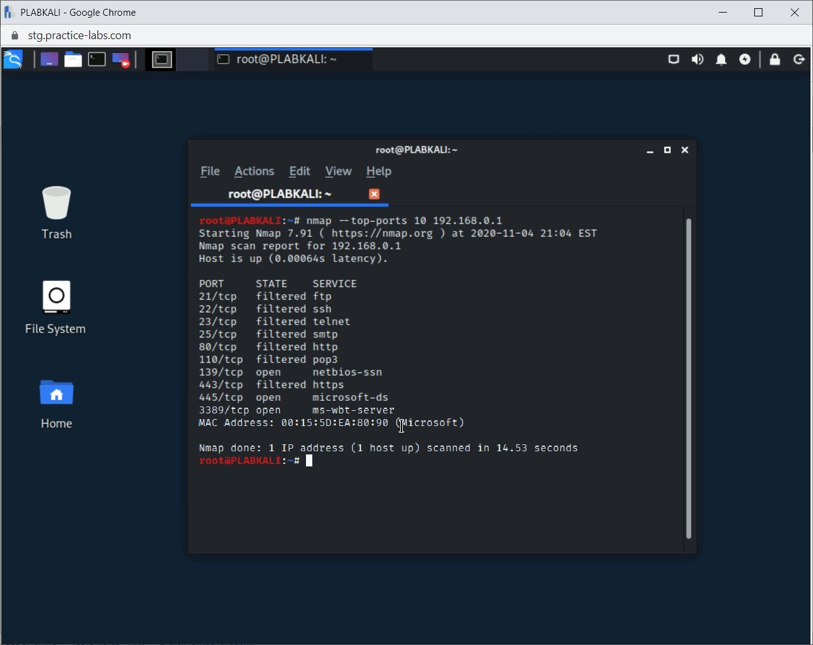

Introduction
bb1840e4-5425-49a3-9d75-477b8f016ff8
Welcome to the Social Engineering Techniques and Exploits Practice Lab. In this module, you will be provided with the instructions and devices needed to develop your hands-on skills.
dc640c20-9434-45ea-b7c2-6d4d6a196bfc
Learning Outcomes
In this module, you will complete the following exercises:
- Exercise 1 - Social Engineering
- Exercise 2 - Social Engineering Principles
- Exercise 3 - Reconnaissance
After completing this module, you should be able to:
- Perform DNS Querying
- Use Recon-ng
- Use theHarvester
- Identify Live Hosts on a Network
- Perform Discovery Scans
- Perform Port Scanning
- Fingerprint a System
After completing this module, you should have further knowledge of:
- Phishing
- Phishing and its Types
- Phishing Methods
- Phishing Process
- Reasons for Successful Phishing Attacks
- Social Engineering Motivation Techniques
- Typosquatting
- Hoax, Baiting, Shoulder Surfing, and Tailgating
- Dumpster Diving
- Spamming
- SPIM
- Identity Theft
- Invoice Scams
- Credential Harvesting
- Influence Campaigns
- Impersonation
- Eliciting Information
- Reconnaissance Terminology
- Tools used in Reconnaissance
- Need for Reconnaissance or Footprinting
Exam Objectives
The following exam objectives are covered in this lab:
1.1 Compare and contrast different types of social engineering techniques.
- Phishing
- Smishing
- Vishing
- Spam
- Spam over Internet messaging (SPIM)
- Spear phishing
- Dumpster diving
- Shoulder surfing
- Pharming
- Tailgating
- Eliciting information
- Whaling
- Prepending
- Identity fraud
- Invoice scams
- Credential harvesting
- Reconnaissance
- Hoax
- Impersonation
- Watering hole attack
- Typosquatting
- Influence campaigns
- Principles (reasons for effectiveness)
Note: Our main
focus is to cover the practical, hands-on aspects of the exam
objectives. We recommend referring to course material or a search engine
to research theoretical topics in more detail.
Lab Duration
It will take approximately 1 hour to complete this lab.
c6fa62a3-1a00-4052-8104-258e8cbaa187
Help and Support
For more information on using Practice Labs, please see our Help and Support page. You can also raise a technical support ticket from this page.
Click Next to view the Lab topology used in this module.
d2c53300-f951-45a9-9aa4-3d4ecae69e11
Lab Topology
During your session, you will have access to the following lab configuration.

Depending on the exercises, you may or may not use all
of the devices, but they are shown here in the layout to get an overall
understanding of the topology of the lab.
- PLABDC01 - Windows Server 2019 (Domain Controller)
- PLABDM01 - Windows Server 2019 (Domain Member Server)
- PLABWIN10 - Windows 10 (Domain Member Workstation)
- PLABKALI - Kali 2019.4 (Stand-alone device)
Click Next to proceed to the first exercise.
<
Home |
README >
CompTIA Security+ Practice Labs
Exercise 1 - Social Engineering
Social engineering is the art of manipulating and
utilizing human behavior to conduct a security breach. In social
engineering, the victim, who is being used as a subject for a security
breach, does not realize that he or she is being used. Users are
considered to be the weakest link in the security chain and are easy to
exploit. The attacker can use various methods in social engineering to
gain sensitive and confidential information. The attacker can use
methods such as sending an E-mail or redirecting the user to a malicious
Webpage. Several methods can be used, but each method intends to get
sensitive and confidential information for a security breach.
In social engineering, the attacker psychologically manipulates the victim and misdirects to obtain the desired information.
Figure 1.1: Displaying a Social Engineering construct.
Social engineering can be performed in various ways:
- Over the telephone
- In-person
- Performing a task on a system
Social engineering can be considered as the base of
mostly all types of passive information gathering techniques. The
outcomes of social engineering can be devastating. With one user as a
target in an organization, the attacker can perform a security breach of
the entire network. It is just a matter of getting inside the network
using the information provided by the user.
There can be various types of users who can be the target of social engineering. Some of the common targets are:
- Receptionist
- IT Helpdesk
- HR department
- Top management
In this exercise, you will learn about social engineering.
Learning Outcomes
After completing this exercise, you should have further knowledge of:
- Phishing
- Phishing and its Types
- Phishing Methods
- Phishing Process
- Reasons for Successful Phishing Attacks
Your Devices
This exercise contains supporting materials for Security+.

Phishing
Phishing is a type of attack that uses social
engineering as its base. It uses technical deception to convince a user
to provide personal information, such as passwords, social security
numbers, credit card numbers, bank account details, and so on. In the
phishing attack, the attacker creates a replica Website or Webpage that
tricks the user into providing personal information. The Website or
Webpages are real look-alikes of the original Website or Webpages that
the user can get tricked. The URLs are close to the original, which
users don’t bother to check most of the time. One of the key intents of
using phishing is for financial advantage.
Phishing can also be used for getting personal and
confidential information from the target. The attacker may simply use an
identity, which is legitimate. The attacker does not reveal his or her
own identity. Using the legitimate identity of someone else, the
attacker requests information from the target. The target may simply be
convinced with the legitimate identity and provide the necessary
information to the attack, which can then use this information for
harmful activities. Generally, phishing takes place using Email. An
attacker would pose as an authorized entity and demand information in
reply to that mail.
Phishing can be conducted through various methods:
- In-person
- Through a malicious Website
- Through E-mail malware attachments
Phishing and its Types
There are different types of phishing. Some of the common ones are:
Smishing
Smishing is a type of vishing and is a social
engineering attack that uses text messaging to obtain sensitive
information such as account details.
Vishing
Vishing attack is another form of phishing and is
conducted over Voice over IP (VoIP) lines where the attacker pretends to
be a legitimate caller from a bank or financial institution. Using the
vishing attack, the caller attempts to obtain personal information, such
as a bank account number or credit card information.
Watering Hole
A Watering Hole is a more complex type of phishing
attack. In this type of attack, an attacker infects a website that is
often visited by the target users. The website is infected with malware
that is injected into the user’s system when they connect to the
website. It is a multi-phased attack in which the attacker first
profiles the target, who are employees of an organization or a
government agency. In the profiling stage, the attacker learns about the
website these employees frequently visit. Then, the website is infected
with malware. When the users visit the website, their systems are
infected.
The majority of the phishing attacks are performed
using E-mails, and mostly in the form of SPAM. Phishers create a
database of millions of E-mail accounts, usually from social networking
Websites, and then send E-mails to these accounts. Over the years, SPAM
E-mails have been well-written and well-designed, making them more
convincing. Of late, along with messaging, SPAM SMS has picked up its
pace on mobile phones.
Whaling
Whaling is another form of phishing and spear
phishing. However, in whaling, the target is highly focused. Whale
phishing is meant to target high-profile candidates, such as the CEO or
CIO in an organization, or maybe a well-known and established person,
such as a film star. High-profile people have high-profile secrets to
keep - personal or business-related, which can be used against them.
Remember, phishing is just another form of social engineering, and your
convincing power plays a major role. The attacker may create a sense of
urgency in an E-mail and force a person to click a URL embedded in the
E-mail.
Let’s take an example - using whale phishing. You
could get your hands on an executive’s official E-mail and official bank
account credentials. You cannot only approve monetary transactions but
also perform them.
To prevent whale phishing, you need to ensure that you
build enough technical and detection controls. Not only in the office,
but they also need to be secure at home and when they are using mobile
phones.
Pharming
In this type of phishing attack, the user is
redirected to a real look-alike Website. When a user types the correct
URL in the Web browser, the user is redirected to a real look-alike
Website. The user has simply clicked on the URL, which is not incorrect
or wrong, but the attack has still occurred. This is done by DNS cache
poisoning. The real IP address mapped to the legitimate URL is changed
to an IP address to redirect the user to a malicious Website, which is a
real look-alike. The user will not be able to suspect anything here
because the URL is correct.
Spear Phishing
Spear phishing, unlike general phishing, targets
specific individuals and companies. This entity could be an individual
or several individuals. An attacker may target a top executive of an
organization to steal information, and the spear phishing may be used to
install malware on to his or her system and eventually get into the
network. The spear-phishing Emails are usually designed to look like
they originate from a well-known company or a Website. For example, as a
firm's top executive, you may receive an Email from eBay asking you to
reset your account password. The E-mail includes a URL to click and
states that there have been unauthorized login attempts, and thus, you
should reset your password. Otherwise, your account will be locked. In
this example, the E-mail was designed to create a sense of urgency.
Prepending is another type of spear phishing attack.
It is a type of Spear phishing attack using machine learning focused on
social media accounts like Twitter. Prepending is an automated method to
conduct the spear phishing attack. It goes through the user’s posts and
makes a note of the most commonly used words. Then, it prepends the
tweets from the user. There are links in the tweets that are added based
on the user’s engagement with the tweets.
Phishing Methods
Three key methods can be used in phishing:
- Mass mailing: A large number of audiences are
targeted. It is quite likely that some of the audiences are going to
fall for this method. This method is usually performed using SPAM.
- Instant messaging: In the last few years,
instant messaging is one of the key media in phishing. Malicious URLs
are sent with attractive messages to lure users into clicking them
- Malicious Websites: Phishing can also be initiated through malicious Websites.
Phishing Process
Phishing is a four-stage process. These stages are as follows:
- Initiation - The attacker prepares for an attack.
- Execution - The attacker sends out the mass mail or instant message to hundreds or thousands of users.
- User Action - User performs two tasks - first, clicks on the URL and then enters the personal information on the Webpage that is loaded.
- Completion - The information that is entered
by the user is received by the attacker and saved at his end. It is now
up to the attacker to use this information.
By the end of the fourth stage, the phishing attack is
completed. In a phishing attack, the attacker can use various attack
methods. Some of these attack methods are:
- Man-In-The-Middle
- Session hijacking
- Phishing through search engines
- Link Manipulation
- URL Obfuscation Attacks
- Client-side vulnerabilities
- Cross-site scripting
- Malware / Keyloggers / Screen loggers / Trojans
- E-mails (Deceptive Phishing)
- Hosts file poisoning
- DNS-based Phishing
- Content-Injection
Reasons for Successful Phishing Attacks
There are various reasons for a phishing attack to become successful. Some of the common reasons are as follows:
Lack of knowledge: Users are not trained enough
or are completely unaware of the dangers of phishing attacks. Attackers
use this method on several hundred and thousands of users at once, and
several users fall prey to the attack.
Visual deception: Attackers very smartly use a
similar URL or domain names with the replica of the Website. Users are
deceived with the website's replica and without realizing enter their
user credentials, which are then captured by the attacker and used on
the real Website.
Visual Indicators: Users mostly do not pay attention to the URL or the domain name and, therefore, end up being victims of the phishing attack.
7429868b-128c-4069-95a9-7246a6a9e5a3
<
Home |
README >
CompTIA Security+ Practice Labs
Exercise 2 - Social Engineering Principles
An attacker may use different social engineering
principles to gain information. For example, an attacker may show
authority, such as acting as a representative from the law enforcement
agency. Using another principle, an attacker may also create an urgency
situation in which you may end up revealing the information.
In this exercise, you will learn about different social engineering principles.
Learning Outcomes
After completing this exercise, you should have further knowledge of:
- Social Engineering Motivation Techniques
- Typosquatting
- Hoax, Baiting, Shoulder Surfing, and Tailgating
- Dumpster Diving
- Spamming
- SPIM
- Identity Theft
- Invoice Scams
- Credential Harvesting
- Influence Campaigns
- Impersonation
- Eliciting Information
Your Devices
This exercise contains supporting materials for Security+.

Social Engineering Motivation Techniques
When using social engineering, an attacker has to use a
method or technique to obtain the desired information. Various
techniques and methods can be used by the attacker. Some of the commonly
used techniques and methods are:
- Authority: The attacker shows authority by
pretending to be from law enforcement or something similar. The attacker
displays confidence in pretending to be someone with authority and
pressurizes the victim to provide information. For example, the attacker
may call the reception and tell the receptionist that he is calling
from the police department and needs certain information.
- Scarcity and urgency: With this technique, a
sense of urgency is created, which forces the victim to make a quick
decision without thinking much. For example, the attacker may call a
user to share the password to be reset immediately, or his account will
be terminated.
- Social proof: Social proof is mostly used when
the victim is in a situation that he or she does not know how to deal
with. The victim decides by observing others. The attacker can apply
this technique in more than one way by displaying an act that convinces
them that this is the correct behavior.
- Fear: The attacker uses fear to make the
victim do what they want them to do. The attacker dramatizes the
situation in a way in which the victim is forced to act quickly to avoid
a dangerous outcome.
- Intimidation: The attacker may simply
intimidate or force the target into doing something of his choice. The
attacker may use the impersonating technique to pull off intimidation.
- Consensus: In this method, the attacker may
create malware or rogueware and put fake testimonials to convince the
people to use it. People are generally more convinced if they are
convinced that a lot of other people are using these products.
- Familiarity: In this method, the attacker
becomes your friend. He or she shares the likes and dislikes with you.
When you are convinced that they are like you, the attacker may convince
you to do something, such as provide information.
- Trust: In this method, the attacker creates a
trusted channel with you. You start trusting the person and believe that
he or she is the fallback point in case you have a problem. Once the
trust is established, you are convinced to share the information that he
or she is looking for.
Typosquatting
Typosquatting is a method that uses real look-alike
URLs. For example, if it is google.com, the attacker may use a
similar-looking URL, which is goggle.com. If you are not careful enough,
you might end up clicking on this Website, which is owned by the
attacker. Such a Website may simply deliver spyware or malware on to
your system.
Real Website: www.google.com
Type-squatted Website: www.goggle.com
Hoax, Baiting, Shoulder Surfing, and Tailgating
The following methods are commonly used in social engineering:
Hoax
A computer hoax happens through the Internet. The hoax
attacker uses hook tactics to draw the victim’s interest, warns the
victim of dire consequences, and requests the victim to send the same
message to many recipients.
Shoulder Surfing
Shoulder surfing is a social engineering attack
performed by looking over the victim's shoulder to retrieve credit card
numbers, passwords, or any other pertinent information. The attacker
directly observes the information entered by the victim by standing very
close or behind the victim or uses vision-enhancing aids or binoculars
to observe from far. Shoulder surfing attackers also use the technique
of fixing up closed-circuit cameras hidden behind the wall or ceiling to
obtain sensitive information.
Baiting
Baiting is an attack that uses CDs, DVDs, or USB
drives. It does not use E-mails as the medium but relies on storage
devices. Mostly, USB drives are used in this scenario. The USB drives
are loaded with malware and placed in places where they are easy to
find. For example, a user may find a USB drive in the parking lot of his
office. When the user uses the USB drive on the company’s laptop, the
malware is triggered and infects the laptop. Through the laptop, the
malware can eventually spread to the network.
Tailgating
Tailgating is a social engineering act of gaining
access to an electronically locked system or a restricted area by
following a user who has legitimate access to access vulnerable
information. Tailgating is also known as piggybacking.
Figure 2.1: Displaying a Piggybacking/Tailgating attack.
Dumpster Diving
Dumpster diving is another social engineering attack
that uses the physical method of accessing vulnerable information.
Papers sent to dumpsters or recycling bins from a company may contain
highly sensitive information. Attackers screen those papers carefully to
get valuable information. The attacker may target not only the papers
but also electronic media or anything that can be useful to them.
Depending on the attack, attackers can look for the following information:
- User IDs
- Passwords
- Phone numbers
- E-mail IDs
- Bank account numbers
- Critical process and procedural information
As part of penetration testing, you should look for
the information mentioned above in a pile of papers that are considered
junk. Users often print critical and confidential documents that are
never collected and end up on a paper pile near the printer or in the
dust bin. Another place to look for information is in the dust bin on a
user’s workstation. If you happen to find any critical information, you
can suggest to the organization to use a paper shredder. For hard
drives, there are shredders available that can be used. Alternatively, a
data wipe can be performed on the hard drives before disposing of them.
 Figure 2.2: Displaying a dumpster diving social engineering attack.
Figure 2.2: Displaying a dumpster diving social engineering attack.
Spamming
Spam is an unwanted Email that is also known as
Unsolicited Commercial Email (UCE) or Unsolicited Bulk Email (UBE).
Spamming is a method in which an unknown sender sends a large number of
unsolicited and unwanted Emails to thousands and millions of users. The
spammers, people who send spam, use various sources to collect Email
addresses. Some of the sources can be addresses from Websites, customer
lists, newsgroups, and social media Websites. There are specialized
tools available that can harvest Email addresses from Websites and the
Internet. Spammers can also purchase the Email address lists from people
who sell them illegally.
Some Spam Emails are commercial in nature, and some
are so lucrative that the users are forced to open them and click on the
malicious links embedded within them.
SPIM
SPIM is SPAM over Instant Messaging services.
In present times, users use various instant messaging apps to send and
receive messages. For example, millions of users use WhatsApp daily for personal and official communication. However, instant messengers like WhatsApp are also victims of SPIM.
In most instant messenger apps, anyone can send you a message if they
know your mobile number. Unless you explicitly block them, you will
likely receive SPIM, which often contains a clickable link.
Since SPIM occurs in real-time, it is quite
likely that the user may click on the link embedded within the message.
The links are often malicious and may simply download a backdoor or
malware on the device. Often, ransomware is also delivered through SPIM.
Identity Theft
Identity theft is not a new type of crime and has been
in practice for many decades. Before the Internet existed, this method
was largely practiced by forging signatures. However, with the invention
of computers and the Internet many years later, the digital method of
identity theft came into existence. In this method, a hacker steals
someone’s identity for personal benefit or financial advantage.
Billions of users are connected to the Internet, and
the wide majority have entered their personal information on one website
or the other. When you save your information on the internet, it may
get exposed to a hacker if the site is hacked and its data is stolen.
The hacker may use the stolen information somewhere
else. For example, a hacker may create another user account using your
credentials. The situation worsens if this account is misused for
harassing or threatening someone or even conducting an unlawful
activity, such as stealing information.
A hacker may steal identity information, which could
include bank account username and password, credit card information,
driving license, E-mail credentials, telephone number, social security
number, and other details that may belong to a user.
Invoice Scams
Attackers always have something new up their sleeves.
They find better, intuitive, and interesting methods to either gain
information or fool the target with monetary scams. An invoice scam is
one of the tricks that is used by an attacker to extract money from
corporate targets. In this type of scam, the attacker sends an invoice
to a victim, typically the invoicing department of a company, although
it can also be sent to individuals. The invoice is raised in the name of
an organization, such as Apple, for example. The invoice contains the
logo of the organization, name, address, and purchase details. In
reality, the target would have never bought anything. For example, the
invoice may contain details about an app purchase, which the target
never bought. However, in most cases, the amount is not big, and
therefore, many targets make the payment unknowingly without inspecting
the invoice details.
Credential Harvesting
Credential Harvesting is known under different terms,
such as account harvesting or password harvesting. In credential
harvesting, an attacker may use different tactics to gain access to user
credentials. Phishing is one of the methods used for credential
harvesting. For example, the attacker may simply send a phishing Email
with malicious links, which, if clicked, can drop malware on the user’s
system. Another method can be social engineering, using which the
attacker can convince the target to provide user credentials.
After the credentials are gained, the attacker can do one of the following:
Gain access to the system or the network
Sell the information to others in the dark Web
Influence Campaigns
Influence campaigns are designed to influence a
specific set of people. Most often, the intentions of an influence
campaign might be a political motive. On the other hand, other motives
can also include the intentions of cyber warfare. In the present time,
when social media has touched new heights, it is a perfect weapon for
influence campaigns.
Most people in the world use mobile devices, which are
loaded with one or other social media apps. Social media is often used
to influence campaigns. For example, Twitter might be used to launch an
influence campaign. Tweets may be shared and liked in the millions. It
is an interesting fact that the more the news spreads, the bigger its
reach is with the audience. Some organizations will pay millions of
dollars to push the tweets or posts to your timeline so that it reaches
you. This has been known to be done on the global political stage, where
some countries will influence social media to their benefit and sow
discord during the election campaigns of other countries.
Impersonation
Impersonation is the act of pretending to be someone
else. In a cybersecurity context, impersonation is using a fake
identity. The impersonator is an attacker who shows a fake identity to
the victim. If the attacker is wrongly identified as a trustworthy
entity, then the victim is likely to disclose confidential information.
This information could be passwords, information related to financial
transactions, etc. This information can be used by the impersonator to
perform a harmful activity.
Eliciting Information
Elicitation is a method that is used by an attacker to
extract information from the target. The attacker extracts the
information in a manner that the target does not know that they are
providing the information. The idea is to strike a casual conversation
with the target, and in between the conversation, several methods are
used for information extraction. In the whole elicitation process, the
target is unaware and keeps providing the information.
The attacker may use various methods to extract information. Some of the key methods can be:
- Flattery: This is about praising someone who
is your target. People often feel ashamed of bragging about their
achievements. It is quite obvious that when someone starts praising you,
it opens the doors for further communication.
- False statements: This is about making false
statements to get the correct information. You, as the attacker, would
make a statement about incorrect numbers, which is then corrected by the
target.
- Artificial ignorance: Is triggering the target
to educate them with the correct information. The attacker may just act
ignorant about the topic of discussion, and then as human instincts go,
the target educates the attacker.
- Bracketing: Is about providing close to
correct information to the target, who then gets concerned and provides
the real numbers or the information.
- Safe environment: Is about creating a safe
zone for the target, who can fall for it even if you are a stranger. You
show support for the target’s feelings and then extract the information
as required.
7429868b-128c-4069-95a9-7246a6a9e5a3
<
Home |
README >
CompTIA Security+ Practice Labs
Exercise 3 - Reconnaissance
Reconnaissance, also known as Footprinting, is a
method of collecting information about a target. It is the first phase
and lays the foundation for the attack. With the discovered information,
you can determine the attack surface of a target.
The following could be gathered about a target using reconnaissance:
- Basic information using Web searches
- Location of live systems on the network
- Network size
- Identification of open ports and running services
- Operating system version
Reconnaissance can be split into three parts:
- Footprinting: Collecting information about an organization passively.
- Scanning: Using active reconnaissance methods, such as nmap scanning, to extract information about networks and systems.
- Enumeration: After footprinting and scanning
have been completed, you can use the information to find the area that
you want to attack. For example, if the attacker finds out that a
specific version of Apache is being used, then the attacker can narrow
down the attack to exploit its vulnerabilities.
In this exercise, you will learn about reconnaissance tools and techniques.
Learning Outcomes
After completing this exercise, you should have further knowledge of:
- Reconnaissance Terminology
- Tools used in Reconnaissance
- Need for Reconnaissance or Footprinting
After completing this exercise, you should be able to:
- Perform DNS Querying
- Use Recon-ng
- Use theHarvester
- Identify Live Hosts on a Network
- Perform Discovery Scans
- Perform Port Scanning
- Fingerprint a System
Your Devices
You will be using the following devices in this lab. Please power these on now.
- PLABDC01 - Windows Server 2019 (Domain Controller)
- PLABDM01 - Windows Server 2019 (Domain Member Server)
- PLABWIN10 - Windows 10 (Domain Member Workstation)
- PLABKALI - Kali 2019.4 (Stand-alone device)
Reconnaissance Terminology
There is some basic terminology that an ethical hacker needs to know, including types of reconnaissance and footprinting.
There are five types of reconnaissance:
- Active
- Passive
- Pseudonymous
- Internet
- Anonymous
Let’s discuss these in more detail.
Active
Using the active reconnaissance method, you directly
interact with a system. For example, you can execute a nmap command to
collect information about the open ports.
Active reconnaissance can include the following methods:
- IP or Port scanning
- Operating system scanning
- Footprinting of existing services in a system
- Zone transfer on an internal DNS server
- Spidering the public Webpages
- Fuzzing
- Social Engineering
Passive
Passive reconnaissance is the opposite of active
reconnaissance. You do not interact with the system. Instead, you use
various methods, such as a web search, to find information about a
target.
Passive reconnaissance can use some of the following methods:
- Search the Whois database
- Browse through the target’s Website
- Perform Social Network scraping
- Search Google or any search engine
- Extract the DNS information
- Review blogs, public forums, and Websites
- Search breach databases and DarkWeb about the target
For example, the Whois databases is a good start to
gather information about a domain name. You can simply visit the
whois.net website and enter the URL for the domain. The outcome is
displayed, as shown in the below exhibit.
Figure 3.1: Displaying an example of a domain name details on the whois.net website.
An organization’s information may be available on the
DarkWeb, which is also known as the Dark Net or the Underground
Internet. The Website on the DarkWeb does not appear in a search engine.
You need a special web browser such as The Onion Research Project or
most famously known as the TOR web browser. These websites have .onion
extensions and are considered gold mines for hackers. It is quite
possible that you can get some information about your target.
Pseudonymous
In this method, you collect information that is
published by the target under a pseudo name or pseudonym. The target
uses this name so that the information about him or her cannot be traced
back to them. For example, a group of hackers uses a pseudo name
Anonymous. No one knows who they are as their real identity is concealed
behind the pseudo name.
Internet
In this method, you would use the Internet to collect
information about the target. For example, you can use Google Hacking
Database (GHDB) to find the information that is otherwise not visible in
normal searches. For example, it would be difficult for you to locate a
website that has exposed passwords in the URL. To do this, you can find
the search terms in GHDB, which contains thousands of search terms that
can help you exploit certain vulnerabilities.
Alert: Please note this is
only for instructional purposes on how the GHDB website can be used to
gather information from different websites. Using this information to
access websites without the owner’s consent is illegal. This is for
demonstration purposes only.
Let’s look at the following term:
"'username' =>" + "'password' =>" ext:log
Figure 3.2: Displaying the GHDB website with a specific term for exposed passwords.
When you search for this term in Google, here are the
results that you get. Notice that the search lists an astonishing number
of 89600 websites that have exposed their passwords in the URL.
Figure 3.3: Displaying an example of the term that was searched in Google.
Anonymous
In this method, you will collect information
anonymously. You would use this method when you do not want someone to
trace you. For example, there are several free VPN tools available that
allow you to surf the web anonymously. You can even use search engines
like duckduckgo.com to surf the web without leaving any privacy traces.
TOR is one example that one can use to surf the web anonymously. It uses duckduckgo.com as the default search engine.
Tools used in Reconnaissance
Various tools can be used in reconnaissance or footprinting. Some of the key tools are:
- Whois - Queries for domain names
- Nslookup - Queries DNS
- FOCA - Enumeration for users, files, folders, and OS information
- theHarvester - Information gathering for an E-mail address, subdomains, hostnames, banners
- Shodan - Information search engine using metadata
- Maltego - Information gathering
- Recon-ng - Web reconnaissance
- Censys - Search engine for information about devices on the Internet
Kali Linux also includes reconnaissance or footprinting tools under different categories, which are:
- DNS Analysis
- IDS/IPS Identification
- Live Host Identification
- Network & Port Scanners
- OSINT Analysis
- Route Analysis
- SMB Analysis
- SMTP Analysis
- SNMP Analysis
- SSL Analysis
Figure 3.1 Screenshot of PLABKALI: Displaying the categories of tools under 01- Information Gathering in the Applications menu.
The DNS Analysis category includes the following tools:
- dnsenum
- dnsmap
- dnsrecon
- dnstracer
- dnswalk
- fierce
- urlcrazy
The IDS/IPS Identification category includes the following tools:
- fragroute
- fragrouter
- ftest
- lbd
- wafw00f
The Live Host Identification category includes the following tools:
- arping
- cdpsnarf
- fping
- hping3
- masscan
- miranda
- ncat
- thcping6
- unicorscan
- wof-e
- xprobe2
The Network & Port Scanners category includes the following tools:
- masscan
- nmap
- unicorscan
- zenmap
The OSINT Analysis category includes the following tools:
- automater
- maltego
- theharvester
- twofi
- urlcrazy
The Route Analysis category includes the following tools:
- 0trace
- intrace
- irpas-ass
- irpass-cdp
- netdiscover
- netmask
The SMB Analysis category includes the following tools:
- enum4linux
- nbtscan
- smbmap
The SMTP Analysis category includes the following tools:
The SNMP Analysis category includes the following tools:
- braa
- onesixtyone
- snmp-check
The SSL Analysis category includes the following tools:
- sslaudit
- ssldump
- sslh
- sslscan
- sslyze
- tlssled
Need for Reconnaissance or Footprinting
Without Footprinting, it would be difficult for
a hacker to break into a system or network. Therefore, hackers spend a
significant amount of time gathering information about the system or the
organization's network. Based on the collected information, hackers
build their hacking strategy and execute it. As an ethical hacker, you
gain the following benefits when you perform footprinting:
Understand the Security Posture
When you footprint an organization’s network, you can
gain information on the security devices, the level of defense, and much
more information about the security implementation. Based on the
information that you collect, you build your attack accordingly. For
example, you can understand if the organization has single-layered
security, such as a firewall, or defense-in-depth, which contains
multiple layers of security devices.
Reduce Attack Area
The attack area is the target system or network that
you want to exploit. It is always better to reduce the attack area so
that you have a more controlled attack. Attacking a larger area is
easier to trace, so the organization has more of a chance to stop the
attack. You can reduce the attack area to a network subnet, a specific
domain name, or an individual system that directly connects to the
Internet.
Collect Maximum Information
In the Reconnaissance phase, you may be able to
gather much information. Once identified and analyzed, this information
can help you generate your database about the security weaknesses of a
target system or network. Based on the weaknesses, you can prepare your
attack to break into the security perimeter.
Draw Network Diagram
Using the Footprinting method, you can collect
information and generate a network diagram, which can help you
understand the network layout. For example, you can run the tracert tool
to find the path from a system to a target system. A network diagram
gives you clarity on how systems are placed on a network. For example,
you can find whether the Internet-facing servers are placed on the same
network or a separate network, such as the demilitarized zone (DMZ).
Task 1 - Perform DNS Querying
nslookup is a network administration command-line tool
that is primarily used to query the Domain Name System (DNS). Using
this tool, you can obtain the domain name or IP address mapping.
To use the nslookup, perform the following steps:
Step 1
Ensure that all the required devices are powered on. Connect to PLABKALI.
In the Enter your username text box, type the following:
root
In the Enter your password text box, type the following:
Passw0rd
Click Log In or press Enter.
Figure 3.2 Screenshot of PLABKALI: Logging on to Kali Linux.
Step 2
After a successful login, the desktop is displayed.
 Figure 3.3 Screenshot of PLABKALI: Displaying the desktop after successful login.
Figure 3.3 Screenshot of PLABKALI: Displaying the desktop after successful login.
Step 3
In the menu bar, click Terminal Emulator.
Figure 3.4 Screenshot of PLABKALI: Clicking the Terminal Emulator icon in the menu bar.
Step 4
The terminal window is displayed. Type the following command:
nslookup practicelabs.com
Press Enter.
Figure 3.5 Screenshot of PLABKALI: Typing the nslookup command in the terminal window.
Step 5
Note that the IP address for the domain, practicelabs.com,
is displayed. The first two lines of output specify the server to which
the request was directed. This is the default server for DNS name
resolution. The second section provides the name of the record and its
corresponding IP address.
In this example, the DNS server is 192.168.0.1. The record for practicelabs.com is also mapped to the same IP address, 192.168.0.1. In the real-world scenario, you are likely to get both of them to be different IP addresses.
Figure 3.6 Screenshot of PLABKALI: Showing the results of the nslookup command.
Step 6
You can also check for a specific record. For example, to check for any A records for practicelabs.com, type the following command:
nslookup -type=A practicelabs.com
Press Enter.
Note that the IP address for the domain, practicelabs.com, is displayed.
Figure 3.7 Screenshot of PLABKALI: Showing the result of the nslookup command for the A records of the specified domain.
Step 7
You can use the -type=soa option to tell nslookup to display the authoritative (primary) name server. Type the following command:
nslookup -type=soa practicelabs.com
Press Enter.
Figure 3.8 Screenshot of PLABKALI: Showing the result of the nslookup -type=soa command.
Step 8
Clear the screen by entering the following command:
clear
You can also verify how long a record is cached using the debug parameter. Type the following command:
nslookup -type=A -debug practicelabs.com
Press Enter.
Figure 3.9 Screenshot of PLABKALI: Typing the nslookup command with the debug parameter.
Step 9
Note that there is no indication of when the records
are going to expire. However, if you attempt to execute this command on a
live server on the Internet, you will get the answer. The internal
server does not provide complete details.
Figure 3.10 Screenshot of PLABKALI: Showing the result of the nslookup -type=A command with the debug parameter.
Step 10
You can also use the MX record to map a domain name to a list of mail exchange servers for that domain. For example, MX record provides the details of the mail server to which all the E-mails are sent for the practicelabs.com domain. Type the following command:
nslookup -query=MX practicelabs.com
Press Enter.
Since there is no mail server for this domain, notice that this command fails.
Figure 3.11 Screenshot of PLABKALI: Showing the result of the nslookup -query=MX command.
Step 11
The NS record maps a domain name to a list of the DNS
servers that are authoritative for this domain. Type the following
command:
nslookup -type=ns practicelabs.com
Press Enter.
Figure 3.12 Screenshot of PLABKALI: Typing the nslookup command with the ns parameter.
Step 12
Since there is only one DNS server, it is now listed as the response to the command.
 Figure 3.13 Screenshot of PLABKALI: Showing the result of the nslookup -type=ns command.
Figure 3.13 Screenshot of PLABKALI: Showing the result of the nslookup -type=ns command.
Step 13
You can perform domain name resolution using a specific DNS server. Type the following command:
nslookup practicelabs.com 192.168.0.1
Press Enter.
Figure 3.14 Screenshot of PLABKALI: Typing the nslookup command for domain name resolution using a specific DNS server.
Step 14
Notice the listed details as the output of this command.
Figure 3.15 Screenshot of PLABKALI: Showing the result of the nslookup command.
Step 15
You can also change the default timeout to wait for a reply using -timeout option. Type the following command:
nslookup -timeout=10 practicelabs.com
Press Enter.
Figure 3.16 Screenshot of PLABKALI: Changing the timeout for the nslookup command.
Step 16
Observe the output of the command.
Figure 3.17 Screenshot of PLABKALI: Showing the result of the nslookup -timeout command.
Step 17
Clear the screen by entering the following command:
clear
You can view all the available DNS records using the -query=any option. Type the following command:
nslookup -query=any practicelabs.com
Press Enter.
Figure 3.18 Screenshot of PLABKALI: Typing the nslookup command with the query parameter.
Step 18
Notice the listed details as the output of this command.
Figure 3.19 Screenshot of PLABKALI: Showing the nslookup -query=any command.
Keep the terminal window open.
Task 2 - Use Recon-ng
Recon-ng is an open-source framework that is developed
in Python. It is mainly used for reconnaissance and information
gathering on the Internet. It provides multiple modules for
reconnaissance and information gathering. These modules are divided into
multiple categories, such as Auxiliary, Contacts, Hosts, Output, and Pwnedlist.
By default, these modules are not added to the current version. You
will have to get these modules from the Recon-ng marketplace and install
them.
Note: It is important to understand that the capabilities of a tool, such as Recon-ng,
is shown in a limited capacity in this task. It is much more powerful
and capable. You may want to explore it further in your free time.
In this task, you will learn to use Recon-ng, which is built into Kali.
Step 1
Ensure you have powered on all the devices listed in the introduction and are connected to PLABKALI.
On the desktop, click Terminal if already not opened.
Note: Clear the screen with the clear command if the terminal window was already opened.
To start Recon-ng, enter the following command:
recon-ng
Press Enter.
Figure 3.20 Screenshot of PLABKALI: Typing the recon-ng command.
Step 2
Notice that the recon-ng tool is now invoked.
Notice that the message states that there are no
modules loaded. This means that you need to first load a module to
perform a task. Without a module, you cannot perform any action.
Figure 3.21 Screenshot of PLABKALI: Showing the recon-ng interface and its command prompt.
Step 3
You can start by listing the commands that you can use in recon-ng. Type the following command:
help
Press Enter.
Figure 3.22 Screenshot of PLABKALI: Typing the help command on the recon-ng command prompt.
Step 4
Notice that the commands are now listed.
Figure 3.23 Screenshot of PLABKALI: Showing the results of the help command.
Step 5
Let’s first install a module. Type the following command:
marketplace install hackertarget
Press Enter.
Figure 3.24 Screenshot of PLABKALI: Typing the command to install a module from the marketplace.
Step 6
The hackertarget module is now installed.
Figure 3.25 Screenshot of PLABKALI: Showing the results of the marketplace command.
Step 7
The next task that you need to perform is to load the module. To do this, type the following command:
modules load hackertarget
Press Enter.
Figure 3.26 Screenshot of PLABKALI: Showing the command to load module named hackertarget.
Step 8
The hackertarget module is now set.
You need to set the source domain now. Type the following command:
options set SOURCE practice-labs.com
Press Enter.
Figure 3.27 Screenshot of PLABKALI: Setting the source domain at the recon-ng command prompt.
Step 9
The source is now set.
Figure 3.28 Screenshot of PLABKALI: Showing setting the source as the output.
Step 10
The source domain is now set. You will now execute the module. Type the following command:
run
Press Enter.
Figure 3.29 Screenshot of PLABKALI: Typing the command to execute the module at the recon-ng command prompt.
Step 11
Notice the output. Various subdomains with their IP addresses are revealed.
Figure 3.30 Screenshot of PLABKALI: Showing the output with various subdomains and their IP addresses.
Step 12
Exit from recon-ng using the following command:
exit
Figure 3.31 Screenshot of PLABKALI: Executing the exit command to close the recon-ng shell.
Keep the terminal window open.
Task 3 - Use theHarvester
TheHarvester is an information-gathering tool. By
providing a domain name and a search engine name, you can search for the
following information:
- E-mail accounts
- User names
- Hostnames
- Subdomains
- Banners
Depending upon the information available on the search engine, theHarvester will fetch the required details for you.
To use theHarvester, perform the following steps:
Step 1
Ensure you have powered on all the devices listed in the introduction and are connected to PLABKALI.
On the desktop, click Terminal if already not opened.
Note: Clear the screen with the clear command if the terminal window was already opened.
Type the following command:
theHarvester -d practice-labs.com -l 500 -b google
Press Enter.
Note: The -d parameter is used for the domain name. The -l parameter is used for the number of results. The -b parameter is used for the source of information, which is a search engine.
Figure
3.32 Screenshot of PLABKALI: Typing theHarvester command with the -d
and -l command and setting the search engine to Google.
Step 2
The command is now executed. It is able to locate E-mail addresses and the number of hosts.
Alert: Due to the restrictions of the virtual environment, there will be no results.
Please run the command and move on to the next Task
Figure 3.33 Screenshot of PLABKALI: Showing the output of the theharvester command with the -d and -l parameter.
Step 3
Several hosts are now located as the result of the theHarvester command.
Figure 3.34 Screenshot of PLABKALI: Showing the hostname resolution with the theHarvester command.
Task 4 - Identify Live Hosts on a Network
Network Mapper, more commonly known as Nmap, is a
network and host discovery tool. It is one of the most widely used tools
for various activities, such as:
- Discovering hosts, services, and ports
- Fingerprinting operating system
- Enumeration
- Discovering vulnerabilities on the local and remote host
- Find the IP address of a remote system
Using Nmap, you can scan for targets in the following way:
- Scan for a single IP: nmap 192.168.0.1
- Scan for a host by using its name: nmap host1.plab.com
- Scan an entire subnet: nmap plab.com/24, nmap 192.168.0.0/24, nmap 192.168.0.*
- Scan for a range of IP addresses: nmap 192.168.0.1-10
- Scan for a range and a system outside the range: nmap 192.168.0.1, 1.10
In this task, you will use Nmap to identify the live systems on a network. To do this, perform the following steps:
Step 1
Ensure that you have logged into PLABKALI. The command prompt window should be open.
On the desktop, click Terminal if already not opened.
Note: Clear the screen with the clear command if the terminal window was already opened.
You will now perform a ping scan to discover the live hosts in a network. Type the following command:
Note: the -sP parameter is used for ping scanning. When you use CIDR /24, Nmap will scan all 256 IP addresses on the network.
nmap -sP 192.168.0.0/24
Press Enter.
Figure 3.35 Screenshot of PLABKALI: Typing the nmap command with the -sP parameter in the terminal window.
Step 2
The output of the following command is displayed. Notice that several hosts were detected, including PLABKALI. Along with this, the gateway IP, 192.168.0.250, is also found.
Figure 3.36 Screenshot of PLABKALI: Showing the output of the nmap -sP command.
Note: Clear the screen with the clear command before typing in the commands in the following steps.
Step 3
You can also perform a scan without ping. To do this, type the following command:
nmap -sn 192.168.0.0/24
Press Enter.
 Figure 3.37 Screenshot of PLABKALI: Typing the nmap -sn command in the terminal window.
Figure 3.37 Screenshot of PLABKALI: Typing the nmap -sn command in the terminal window.
Step 4
The output of the following command is displayed.
Notice that without the ping scan, it has detected several systems on
the network.
Figure 3.38 Screenshot of PLABKALI: Showing the output of the nmap -sn command.
Step 5
You can also trace the path between your system and
each host that is live on the network. To do this, type the following
command:
nmap --traceroute 192.168.0.0/24
Press Enter.
Figure 3.39 Screenshot of PLABKALI: Typing the nmap --traceroute command in the terminal window.
Step 6
Notice the output of the command. In the output, the
hops from your system to the systems on the network are displayed. Since
this is within the same IP subnet, there is a single hop. The output
also displays open ports on each live system.
Figure 3.40 Screenshot of PLABKALI: Showing the output of the nmap - - traceroute command.
Step 7
You can also scan for live hosts on a network using an IP address range. To do this, type the following command:
nmap 192.168.0.1-4
Press Enter.
Figure 3.41 Screenshot of PLABKALI: Typing the nmap command with a series of IP addresses in the terminal window.
Step 8
The output of the following command is displayed.
Notice that only four hosts are listed in the scan. Without any
parameters, the nmap command scans for the live systems and open ports.
Figure 3.42 Screenshot of PLABKALI: Showing the output of the nmap command with a series of IP addresses.
Step 9
You can also use a wildcard to scan an IP range. To do this, type the following command:
nmap 192.168.0.*
Press Enter.
Figure 3.43 Screenshot of PLABKALI: Typing the nmap command with a wildcard in the terminal window.
Step 10
Notice the output of the nmap command with the asterisk. It has searched for all live systems in the subnet of 256 IP addresses.
Figure 3.44 Screenshot of PLABKALI: Showing the output of the nmap command with a wildcard.
Keep the terminal window open.
Task 5 - Perform Discovery Scans
Discovery scan is used for locating live hosts on a
network. There are various methods that can be used in discovery scans.
Some of these are:
- Using ping scan
- Using ARP scan
- Using a port scan
In this task, you will learn to perform different types of discovery scans. To do this, perform the following steps.
Step 1
Ensure that you are connected to PLABKALI, and the terminal window is open.
Note: Clear the screen with the clear command before typing in the commands in the following steps.
Using ping for discovering a host is a common method. Type the following command:
Note: Several
systems have firewalls running that block ping commands, and therefore,
discovering a host using ping may not be successful.
nmap -sP 192.168.0.0/24
Press Enter.
Figure 3.45 Screenshot of PLABKALI: Typing the nmap -sP command in the terminal window.
Step 2
Notice the output of the command. When you execute this command, it sends an ICMP REQUEST message to every IP address. The hosts that respond to the ICMP REQUEST message are considered live and are listed in the output. This command does not list the hosts that do not respond.
Figure 3.46 Screenshot of PLABKALI: Showing the output of the nmap -sP command.
Step 3
You can also send the ARP requests to the hosts on a
given subnet, and if the target system responds to the ARP requests,
then it means that it is live. This method, unlike the ping scan method,
is not blocked by the firewall in most cases. Therefore, you are likely
to get a better outcome. To send the ARP requests to the 192.168.0.0/24 subnet, type the following command:
nmap -PR 192.168.0.0/24
Press Enter.
Figure 3.47 Screenshot of PLABKALI: Typing the nmap -PR command in the terminal window.
Step 4
Notice the outcome of this command. The nmap command
has scanned 256 IP addresses with the- PR parameter and found seven
hosts live. Notice that open ports are also listed.
Note: You can scan for the live hosts without detecting the open ports. To do this, you can use the following command: nmap -sn 192.168.0.0/24.
Figure 3.48 Screenshot of PLABKALI: Showing the output of the nmap -PR command.
Step 5
You can also scan for open ports to detect the system
status. This could be useful when these systems have firewalls enabled
or the systems are in another subnet or network. When you attempt to
detect the ports, the systems will respond to the request. Type the
following command:
nmap -p 80 192.168.0.0/24
Press Enter.
Figure 3.49 Screenshot of PLABKALI: Typing the nmap -p command in the terminal window.
Step 6
The output of this command is displayed. Notice that seven hosts are scanned, but one host, 192.168.0.2, is running a Web server.
Note: With the -p parameter, you can scan for more than one port. For example, you can use the following command: nmap -p 22, 23, 80, 139, 445, 3389 192.168.0.0/24. Each port number needs to be separated by a comma.
Figure 3.50 Screenshot of PLABKALI: Showing the output of the nmap -p command.
Step 7
You can also send the SYN message to a specific port on a subnet to detect live systems. To do this, type the following command:
nmap -sn -PS80 192.168.0.0/24
Press Enter.
Figure 3.51 Screenshot of PLABKALI: Typing the nmap -sn -PS80 command in the terminal window.
Step 8
The output of this command is displayed. Notice that several hosts were found to be live in this subnet.
Figure 3.52 Screenshot of PLABKALI: Showing the output of the nmap -sn -PS80 command.
Keep the terminal window open.
Task 6 - Perform Port Scanning
Using the port scan method, you can determine the TCP
or UDP port that is being used. You can either scan for the entire range
of ports from 1 to 65535 or scan for specific ports. When scanning for
ports, you need to be aware that there can be different states of a
port:
Open: An application is listening for connections on this port.
Closed: The messages were received, but no application is listening on the port.
Filtered: The messages were not received, and
the state of the port could not be determined. This state occurs when
some type of filtering is being used on the port.
Unfiltered: The messages are received, but still, the state of the port could not be determined.
Open/Filtered: The port was either filtered or open, but Nmap was unable to determine the state.
Closed/Filtered: The port was either filtered or closed, but Nmap was unable to determine the state.
To use port scanning, perform the following steps:
Step 1
Ensure that you are connected to PLABKALI, and the terminal window is open.
Note: Clear the screen with the clear command before typing in the commands in the following steps.
One of the simplest methods is to target a system with the nmap command without using any parameters.
nmap 192.168.0.2
Press Enter.
Figure 3.53 Screenshot of PLABKALI: Typing the nmap command with a single host in the terminal window.
Step 2
The output of this command is displayed. Notice that 192.168.0.2 has several ports open, such as 80, 139, and 3389.
 Figure 3.54 Screenshot of PLABKALI: Showing the output of the nmap command.
Figure 3.54 Screenshot of PLABKALI: Showing the output of the nmap command.
Step 3
You can scan for a single port on a host. To do this, type the following command:
nmap -p 22 192.168.0.1
Press Enter.
Figure 3.55 Screenshot of PLABKALI: Typing the nmap -p 22 command in the terminal window.
Step 4
The output of this command is displayed. Notice that the state of the port is set to filtered.
Figure 3.56 Screenshot of PLABKALI: Showing the output of the nmap -p 22 command.
Step 5
Let’s try to scan for the range of ports on 192.168.0.1, which is the domain controller. To do this, type the following command:
nmap -p 1-100 192.168.0.1
Press Enter.
Figure 3.57 Screenshot of PLABKALI: Typing the nmap -p 1-100 command in the terminal window.
Step 6
Notice that the command has been executed
successfully. The output displays that there are 98 filtered ports and
two open ports, which are 53 and 88.
Figure 3.58 Screenshot of PLABKALI: Showing the output of the nmap -p 1-100 command.
Step 7
Let’s now try a fast scan, which will scan for the 100 common ports on a given system. To do this, type the following command:
nmap -F 192.168.0.1
Press Enter.
Figure 3.59 Screenshot of PLABKALI: Typing the nmap -F command in the terminal window.
Step 8
The output of this command is displayed. Notice that
the output of this command is different than the previous command. It
shows 92 filtered ports and 8 open ports. The output is different because the fast scan uses the 100 most common ports.
Figure 3.60 Screenshot of PLABKALI: Showing the output of the nmap -F command.
Step 9
You will now scan for 65535 ports on a system. To do this, type the following command:
nmap -p- 192.168.0.1
Press Enter.
Note: This command will take a while to generate the output. Remember, it is scanning for 65535 ports on a system.
Figure 3.61 Screenshot of PLABKALI: Typing the nmap -p- command in the terminal window.
Step 10
The output of this command is displayed. Notice that
it took nearly two minutes to generate the output and found several
ports open on the domain controller, which is 192.168.0.1.
Figure 3.62 Screenshot of PLABKALI: Showing the output of the nmap -p- command.
Step 11
Next, you will perform port scanning using TCP connect. Type the following command:
nmap -sT 192.168.0.1
Press Enter.
Figure 3.63 Screenshot of PLABKALI: Typing the nmap -sT command in the terminal window.
Step 12
Notice the output. This command has scanned 1000 ports. There are 987 filtered and 13 open ports.
Figure 3.64 Screenshot of PLABKALI: Showing the output of the nmap -sT command.
Step 13
Let’s scan for the selective UDP ports only. Type the following command:
nmap -sU -p 53,80,3389 192.168.0.1
Press Enter.
Note: Do not
provide space after the comma when listing the ports. Else, Nmap
considers it to be the IP address and will attempt to find the route to
the port number.
Figure 3.65 Screenshot of PLABKALI: Typing the nmap -sU command in the terminal window.
Step 14
The output of this command is displayed. Notice that all three ports are in an open state.
Figure 3.66 Screenshot of PLABKALI: Showing the output of the nmap -sU command.
Step 15
You can also use the - - top-ports parameter with a specified number to find ports. To do this, type the following command:
nmap --top-ports 10 192.168.0.1
Press Enter.
Figure 3.67 Screenshot of PLABKALI: Typing the nmap -top-ports command in the terminal window.
Step 16
Notice that the top 10 used ports are listed as the output with their current state.
Figure 3.68 Screenshot of PLABKALI: Showing the output of the nmap -top-ports command.
Keep the terminal window open.
Task 7 - Fingerprint a System
Fingerprinting is also known as banner grabbing. With
fingerprinting, you can determine the type of operating system and its
version on a remote system. It can also be used to determine
applications, such as web servers. There are primarily two types of
fingerprinting:
Active:
Nmap contains a list of the operating system. When you
execute a command to determine the operating system of a remote host,
packets are sent to the remote host, and the response is received, which
is compared with the list of operating systems. Nmap then provides the
closest match. Here are some nmap commands for OS fingerprinting:
To fingerprint a remote system, type the following command:
nmap -O 192.168.0.6
The -O parameter provides more options for
operating system detection. You can choose to skip the hosts that are
not up and running and scan for the operating system only on the live
hosts. To do this, type the following command:
nmap -O --osscan-limit 192.168.0.0/24
You can also use --osscan-guess option with the -O parameter.
It will attempt to detect the operating system. If it is not able to do
so, then it will provide the closest signature possible. It performs an
aggressive detection of the operating system. To do this, type the
following command:
nmap -O --osscan-guess 192.168.0.3
When you perform an operating system scan, Nmap, by
default, attempts five times to detect the name and version. However, to
speed up the process, you can limit the number of attempts. To do this,
type the following command:
nmap -O --max-os-tries 2 192.168.0.5
You can also use the -A parameter with the nmap command to perform fingerprinting. To do this, type the following command:
nmap -A 192.168.0.6
Passive:
Passive fingerprinting can be done in different ways.
For example, you can get many details from the error messages, which can
contain information, such as the type of operating system and server.
Sniffing network traffic can also help determine how long the webserver
has been up and running.
To find out the duration for which the webserver is running, perform the following steps:
Step 1
Clear the screen by entering the following command:
clear
Other than Nmap, you can also use another tool named p0f for operating system fingerprinting. It is a good tool to find out the details of a webserver. To use the p0f tool, type the following command:
Note: You can use the p0f command with the -i <interface_name> to use a specific interface on your system. For example, you can use -i eth0.
p0f
Press Enter.
Figure 3.69 Screenshot of PLABKALI: Typing the p0f command in the terminal window.
Step 2
Notice that the p0f tool has started but is not doing anything. It has 322 signatures that are kept in the /etc/p0f/p0f.fp file. It also mentions that it is using the eth0 interface.
Figure 3.70 Screenshot of PLABKALI: Showing the start of the p0f command.
Step 3
Next, you need to open a Website. Click the Applications icon and then select Web Browser.
 Figure 3.71 Screenshot of PLABKALI: Selecting Web Browser from the Applications menu.
Figure 3.71 Screenshot of PLABKALI: Selecting Web Browser from the Applications menu.
Step 4
Notice that the default intranet Website is loaded. Close the Firefox window.
Figure 3.72 Screenshot of PLABKALI: Showing the Intranet Webpage.
Step 5
Notice that p0f has started to capture a lot of data. Press Ctrl + C to stop the p0f tool. It has captured quite a bit of information. The operating system is Linux.
Figure 3.73 Screenshot of PLABKALI: Stopping the p0f command.
Step 6
Scroll up and notice that it has also determined the uptime for the Webserver.
Figure 3.74 Screenshot of PLABKALI: Showing the captured output of the p0f command.
80e3ace3-3818-477e-9d50-9fdfea66eb75
Close the terminal window.
d31298f5-3011-4089-bf06-fbf08c44a7f9
Keep all devices that you have powered on in their current state and proceed to the review section.
Review
Well done, you have completed the Social Engineering Techniques and Exploits Practice Lab.
c6e74811-6d1f-4779-94c2-34fcca239022
8048826a-f8ed-40da-87c5-2b0679b6db15
d2dd3b59-1a2f-48e8-88a2-afd4e8aa6c6b
a4aa326a-81b9-4214-9f22-b0ee80f17faa
c14a915f-719c-45db-ac6a-e405742eb255
4034f6b9-69a8-4ec4-ac3f-dfc398f041f4
aaaaaaaa-1111-1111-1111-193f35a24fe3
Summary
You completed the following exercises:
- Exercise 1 - Social Engineering
- Exercise 2 - Social Engineering Principles
- Exercise 3 - Reconnaissance
You should now be able to:
- Perform DNS Querying
- Use Recon-ng
- Use theHarvester
- Identify Live Hosts on a Network
- Perform Discovery Scans
- Perform Port Scanning
- Fingerprint a System
You should now have further knowledge of:
- Phishing
- Phishing and its Types
- Phishing Methods
- Phishing Process
- Reasons for Successful Phishing Attacks
- Social Engineering Motivation Techniques
- Typosquatting
- Hoax, Baiting, Shoulder Surfing, and Tailgating
- Dumpster Diving
- Spamming
- SPIM
- Identity Theft
- Invoice Scams
- Credential Harvesting
- Influence Campaigns
- Impersonation
- Eliciting Information
- Reconnaissance Terminology
- Tools Used in Reconnaissance
- Need for Reconnaissance or Footprinting
Feedback
067744a4-4299-4662-b5be-04dbb636a007
Shutdown all virtual machines used in this lab. Alternatively, you can log out of the lab platform.